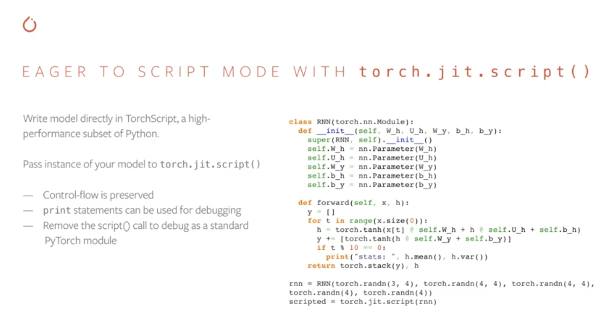
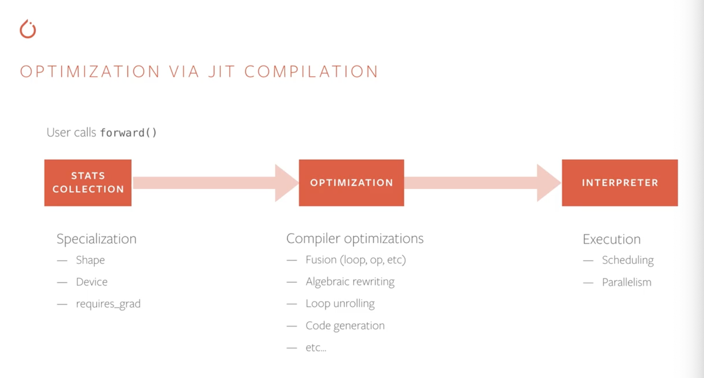

PyTorch traced models
PyTorch traced models
- Here are some of my notes / excerpts from PyTorch documentation that I found while researching PyTorch traced models.
To setup dev environment to test code in this notebook:
# launch the docker container with latest NGC pytorch image available here: https://catalog.ngc.nvidia.com/orgs/nvidia/containers/pytorch/tags
docker run --gpus=2 --rm -d -it -p 8888:8888 -p 6006:6006 -v /home/akshita/github/:/github --ipc=host nvcr.io/nvidia/pytorch:23.02-py3
docker exec -it charming_shirley /bin/bash
# start a detached screen named playground
apt update
apt install screen
screen -Sdm playground; screen -ls
# run jupyter lab in a the background on port 8888
screen -S playground -X screen -t jupyter bash -c "cd / ; jupyter lab --ip=0.0.0.0 --port 8888 --allow-root --NotebookApp.token='' --notebook-dir=/ --NotebookApp.allow_origin='*'"
# run tensorboard in the background on port 6006
screen -S playground -X screen -t tensorboard bash -c "cd / ; tensorboard --logdir=."
Why are Python programs disadvantageous for performance and multi-threading reasons in production environment?
TBD
PyTorch solution
People like PyTorch because it is Pythonic.
akshita@akshita-mlt github % python3
Python 3.9.6 (default, Oct 18 2022, 12:41:40)
[Clang 14.0.0 (clang-1400.0.29.202)] on darwin
Type "help", "copyright", "credits" or "license" for more information.
>>> import this
The Zen of Python, by Tim Peters
Beautiful is better than ugly.
Explicit is better than implicit.
Simple is better than complex.
Complex is better than complicated.
Flat is better than nested.
Sparse is better than dense.
Readability counts.
Special cases aren't special enough to break the rules.
Although practicality beats purity.
Errors should never pass silently.
Unless explicitly silenced.
In the face of ambiguity, refuse the temptation to guess.
There should be one-- and preferably only one --obvious way to do it.
Although that way may not be obvious at first unless you're Dutch.
Now is better than never.
Although never is often better than *right* now.
If the implementation is hard to explain, it's a bad idea.
If the implementation is easy to explain, it may be a good idea.
Namespaces are one honking great idea -- let's do more of those!
- Simple: models are object oriented Python programs
- Debuggable: print, pdb, REPL
- Hackable: use any Python library
This serves the purpose of making PyTorch user-friendly/readable.
Now lets look at production requirements
- Portability - models should be exportable to a wide variety of environments, from C++ servers to mobile.
- Previously in PyTorch - tight coupling of models to the python runtime makes exporting difficult
- Performance - we want to optimize common patterns in neural networks to improve inference latency and throughput
- Previously in PyTorch - There exist numerous further optimization opportunities that we cannot achieve with the level of dynamism in the python language
Why not use a separate framework like cafe2 for deployment? - it became a bottleneck in internal usage at fb. And also, people want a pythonic experience all the way through.
We need a system that can:
- faithfully capture the structure of pytorch programs with minimal user intervention (via Scripting and Tracing)
- use that structure to optimize and run them
PyTorch can run in 2 modes:
- Eager mode (default mode; for prototyping, training and experimenting) and
- Script mode (for production deployment).
To go from eager to script, we can use:
- Scripting -
torch.jit.script() - Tracing -
torch.jit.trace()
Tracing
- Takes an existing eager model with the provided example input. Tracer runs the function, recording the tensor ops performed. We turn the recording into a torchscript module.
- When using
torch.jit.traceyou’ll provide your model and sample input as arguments. The input will be fed through the model as in regular inference and the executed operations will be traced and recorded into TorchScript. Logical structure will be frozen into the path taken during this sample execution. – Paul’s blog - PRO: can reuse existing eager model code
- CON: control-flow and data structures are ignored.
Example from a PyTorch video:
import torch
import torchvision
def foo(x,y):
return 2*x + y
traced_foo = torch.jit.trace(foo, (torch.rand(3), torch.rand(3)))
traced_resnet = torch.jit.trace(torchvision.models.resnet18(), torch.rand(1,3,224,224))
Exploring a bit further:
>>> print(traced_foo.graph) # see inspecting graphs reference
graph(%x : Float(3, strides=[1], requires_grad=0, device=cpu),
%y : Float(3, strides=[1], requires_grad=0, device=cpu)):
%2 : Long(requires_grad=0, device=cpu) = prim::Constant[value={2}]() # /tmp/ipykernel_1647/2218637708.py:2:0
%3 : Float(3, strides=[1], requires_grad=0, device=cpu) = aten::mul(%x, %2) # /tmp/ipykernel_1647/2218637708.py:2:0
%4 : int = prim::Constant[value=1]() # /tmp/ipykernel_1647/2218637708.py:2:0
%5 : Float(3, strides=[1], requires_grad=0, device=cpu) = aten::add(%3, %y, %4) # /tmp/ipykernel_1647/2218637708.py:2:0
return (%5)
>>> type(traced_foo)
torch.jit.ScriptFunction
# https://pytorch.org/docs/stable/generated/torch.jit.ScriptFunction.html
>>> print(traced_foo.code) # see inspecting code reference
def foo(x: Tensor,
y: Tensor) -> Tensor:
_0 = torch.add(torch.mul(x, CONSTANTS.c0), y)
return _0
>>> type(traced_resnet)
torch.jit._trace.TopLevelTracedModule
>>> traced_resnet
ResNet(
original_name=ResNet
(conv1): Conv2d(original_name=Conv2d)
(bn1): BatchNorm2d(original_name=BatchNorm2d)
(relu): ReLU(original_name=ReLU)
(maxpool): MaxPool2d(original_name=MaxPool2d)
(layer1): Sequential(
original_name=Sequential
(0): BasicBlock(
original_name=BasicBlock
(conv1): Conv2d(original_name=Conv2d)
(bn1): BatchNorm2d(original_name=BatchNorm2d)
(relu): ReLU(original_name=ReLU)
(conv2): Conv2d(original_name=Conv2d)
(bn2): BatchNorm2d(original_name=BatchNorm2d)
)
(1): BasicBlock(
original_name=BasicBlock
(conv1): Conv2d(original_name=Conv2d)
(bn1): BatchNorm2d(original_name=BatchNorm2d)
(relu): ReLU(original_name=ReLU)
(conv2): Conv2d(original_name=Conv2d)
(bn2): BatchNorm2d(original_name=BatchNorm2d)
)
)
(layer2): Sequential(
original_name=Sequential
(0): BasicBlock(
original_name=BasicBlock
(conv1): Conv2d(original_name=Conv2d)
(bn1): BatchNorm2d(original_name=BatchNorm2d)
(relu): ReLU(original_name=ReLU)
(conv2): Conv2d(original_name=Conv2d)
(bn2): BatchNorm2d(original_name=BatchNorm2d)
(downsample): Sequential(
original_name=Sequential
(0): Conv2d(original_name=Conv2d)
(1): BatchNorm2d(original_name=BatchNorm2d)
)
)
(1): BasicBlock(
original_name=BasicBlock
(conv1): Conv2d(original_name=Conv2d)
(bn1): BatchNorm2d(original_name=BatchNorm2d)
(relu): ReLU(original_name=ReLU)
(conv2): Conv2d(original_name=Conv2d)
(bn2): BatchNorm2d(original_name=BatchNorm2d)
)
)
(layer3): Sequential(
original_name=Sequential
(0): BasicBlock(
original_name=BasicBlock
(conv1): Conv2d(original_name=Conv2d)
(bn1): BatchNorm2d(original_name=BatchNorm2d)
(relu): ReLU(original_name=ReLU)
(conv2): Conv2d(original_name=Conv2d)
(bn2): BatchNorm2d(original_name=BatchNorm2d)
(downsample): Sequential(
original_name=Sequential
(0): Conv2d(original_name=Conv2d)
(1): BatchNorm2d(original_name=BatchNorm2d)
)
)
(1): BasicBlock(
original_name=BasicBlock
(conv1): Conv2d(original_name=Conv2d)
(bn1): BatchNorm2d(original_name=BatchNorm2d)
(relu): ReLU(original_name=ReLU)
(conv2): Conv2d(original_name=Conv2d)
(bn2): BatchNorm2d(original_name=BatchNorm2d)
)
)
(layer4): Sequential(
original_name=Sequential
(0): BasicBlock(
original_name=BasicBlock
(conv1): Conv2d(original_name=Conv2d)
(bn1): BatchNorm2d(original_name=BatchNorm2d)
(relu): ReLU(original_name=ReLU)
(conv2): Conv2d(original_name=Conv2d)
(bn2): BatchNorm2d(original_name=BatchNorm2d)
(downsample): Sequential(
original_name=Sequential
(0): Conv2d(original_name=Conv2d)
(1): BatchNorm2d(original_name=BatchNorm2d)
)
)
(1): BasicBlock(
original_name=BasicBlock
(conv1): Conv2d(original_name=Conv2d)
(bn1): BatchNorm2d(original_name=BatchNorm2d)
(relu): ReLU(original_name=ReLU)
(conv2): Conv2d(original_name=Conv2d)
(bn2): BatchNorm2d(original_name=BatchNorm2d)
)
)
(avgpool): AdaptiveAvgPool2d(original_name=AdaptiveAvgPool2d)
(fc): Linear(original_name=Linear)
)
>>> print(traced_resnet.code)
def forward(self,
x: Tensor) -> Tensor:
fc = self.fc
avgpool = self.avgpool
layer4 = self.layer4
layer3 = self.layer3
layer2 = self.layer2
layer1 = self.layer1
maxpool = self.maxpool
relu = self.relu
bn1 = self.bn1
conv1 = self.conv1
_0 = (relu).forward((bn1).forward((conv1).forward(x, ), ), )
_1 = (layer1).forward((maxpool).forward(_0, ), )
_2 = (layer3).forward((layer2).forward(_1, ), )
_3 = (avgpool).forward((layer4).forward(_2, ), )
input = torch.flatten(_3, 1)
return (fc).forward(input, )
>>> traced_resnet.graph
graph(%self.1 : __torch__.torchvision.models.resnet.ResNet,
%x.1 : Float(1, 3, 224, 224, strides=[150528, 50176, 224, 1], requires_grad=0, device=cpu)):
%fc : __torch__.torch.nn.modules.linear.Linear = prim::GetAttr[name="fc"](%self.1)
%avgpool : __torch__.torch.nn.modules.pooling.AdaptiveAvgPool2d = prim::GetAttr[name="avgpool"](%self.1)
%layer4 : __torch__.torch.nn.modules.container.___torch_mangle_59.Sequential = prim::GetAttr[name="layer4"](%self.1)
%layer3 : __torch__.torch.nn.modules.container.___torch_mangle_43.Sequential = prim::GetAttr[name="layer3"](%self.1)
%layer2 : __torch__.torch.nn.modules.container.___torch_mangle_27.Sequential = prim::GetAttr[name="layer2"](%self.1)
%layer1 : __torch__.torch.nn.modules.container.Sequential = prim::GetAttr[name="layer1"](%self.1)
%maxpool : __torch__.torch.nn.modules.pooling.MaxPool2d = prim::GetAttr[name="maxpool"](%self.1)
%relu.1 : __torch__.torch.nn.modules.activation.ReLU = prim::GetAttr[name="relu"](%self.1)
%bn1.1 : __torch__.torch.nn.modules.batchnorm.BatchNorm2d = prim::GetAttr[name="bn1"](%self.1)
%conv1.1 : __torch__.torch.nn.modules.conv.Conv2d = prim::GetAttr[name="conv1"](%self.1)
%1613 : Tensor = prim::CallMethod[name="forward"](%conv1.1, %x.1)
%1614 : Tensor = prim::CallMethod[name="forward"](%bn1.1, %1613)
%1615 : Tensor = prim::CallMethod[name="forward"](%relu.1, %1614)
%1616 : Tensor = prim::CallMethod[name="forward"](%maxpool, %1615)
%1617 : Tensor = prim::CallMethod[name="forward"](%layer1, %1616)
%1618 : Tensor = prim::CallMethod[name="forward"](%layer2, %1617)
%1619 : Tensor = prim::CallMethod[name="forward"](%layer3, %1618)
%1620 : Tensor = prim::CallMethod[name="forward"](%layer4, %1619)
%1621 : Tensor = prim::CallMethod[name="forward"](%avgpool, %1620)
%1270 : int = prim::Constant[value=1]() # /usr/local/lib/python3.8/dist-packages/torchvision/models/resnet.py:279:0
%1271 : int = prim::Constant[value=-1]() # /usr/local/lib/python3.8/dist-packages/torchvision/models/resnet.py:279:0
%input : Float(1, 512, strides=[512, 1], requires_grad=1, device=cpu) = aten::flatten(%1621, %1270, %1271) # /usr/local/lib/python3.8/dist-packages/torchvision/models/resnet.py:279:0
%1622 : Tensor = prim::CallMethod[name="forward"](%fc, %input)
return (%1622)
Scripting

- When using
torch.jit.scriptyou’ll simply provide your model as an argument. TorchScript will be generated from the static inspection of the nn.Module contents (recursively). – Paul’s blog
However with tracing, we do not preserve control flow or other language features like data structures, those will all be erased, and only tensor ops will remain.
So we have script compiler for that - which says that we write the model directly in TorchScript, a high performance subset of Python (this subset is getting more and more rich and expansive with time).
import torch.nn as nn
class RNN(torch.nn.Module):
def __init__(self, W_h, U_h, W_y, b_h, b_y):
super(RNN, self).__init__()
self.W_h = nn.Parameter(W_h)
self.U_h = nn.Parameter(U_h)
self.W_y = nn. Parameter(W_y)
self.b_h = nn.Parameter(b_h)
self.b_y = nn.Parameter(b_y)
def forward(self, x, h):
y = []
for t in range(x.size(0)):
h = torch.tanh(x[t] @ self.W_h + h & self.U_h + self.b_h)
y += [torch.tanh(h & self.W_y + self.b_y)]
if t % 10 == 0:
print("stats: ", h.mean(), h.var())
return torch.stack(y), h
rnn = RNN(torch.randn(3, 4), torch.randn(4, 4), torch.randn(4,4), torch.randn(4), torch.randn(4))
scripted = torch.jit.script(rnn)
Exploring a bit further:
>>> scripted
RecursiveScriptModule(original_name=RNN)
>>> print(scripted.code)
def forward(self,
x: Tensor,
h: Tensor) -> Tuple[Tensor, Tensor]:
_0 = annotate(List[Tensor], [])
y = _0
h0 = h
for t in range(torch.size(x, 0)):
_1 = torch.select(x, 0, t)
W_h = self.W_h
_2 = torch.add(torch.matmul(_1, W_h), h0)
U_h = self.U_h
b_h = self.b_h
_3 = torch.__and__(_2, torch.add(U_h, b_h))
h1 = torch.tanh(_3)
W_y = self.W_y
b_y = self.b_y
_4 = torch.__and__(h1, torch.add(W_y, b_y))
y0 = torch.add_(y, [torch.tanh(_4)])
if torch.eq(torch.remainder(t, 10), 0):
print("stats: ", torch.mean(h1), torch.var(h1))
else:
pass
y, h0 = y0, h1
return (torch.stack(y), h0)
>>> print(scripted.graph)
graph(%self : __torch__.RNN,
%x.1 : Tensor,
%h.1 : Tensor):
%48 : NoneType = prim::Constant()
%46 : str = prim::Constant[value="stats: "]() # /tmp/ipykernel_1647/4015499853.py:17:22
%20 : int = prim::Constant[value=1]()
%9 : bool = prim::Constant[value=1]() # /tmp/ipykernel_1647/4015499853.py:13:8
%5 : int = prim::Constant[value=0]() # /tmp/ipykernel_1647/4015499853.py:13:30
%42 : int = prim::Constant[value=10]() # /tmp/ipykernel_1647/4015499853.py:16:19
%75 : Tensor[] = prim::ListConstruct()
%6 : int = aten::size(%x.1, %5) # /tmp/ipykernel_1647/4015499853.py:13:23
%y : Tensor[], %h : Tensor = prim::Loop(%6, %9, %75, %h.1) # /tmp/ipykernel_1647/4015499853.py:13:8
block0(%t.1 : int, %y.11 : Tensor[], %h.17 : Tensor):
%16 : Tensor = aten::select(%x.1, %5, %t.1) # /tmp/ipykernel_1647/4015499853.py:14:27
%W_h : Tensor = prim::GetAttr[name="W_h"](%self)
%18 : Tensor = aten::matmul(%16, %W_h) # /tmp/ipykernel_1647/4015499853.py:14:27
%21 : Tensor = aten::add(%18, %h.17, %20) # /tmp/ipykernel_1647/4015499853.py:14:27
%U_h : Tensor = prim::GetAttr[name="U_h"](%self)
%b_h : Tensor = prim::GetAttr[name="b_h"](%self)
%25 : Tensor = aten::add(%U_h, %b_h, %20) # /tmp/ipykernel_1647/4015499853.py:14:49
%26 : Tensor = aten::__and__(%21, %25) # /tmp/ipykernel_1647/4015499853.py:14:27
%h.5 : Tensor = aten::tanh(%26) # /tmp/ipykernel_1647/4015499853.py:14:16
%W_y : Tensor = prim::GetAttr[name="W_y"](%self)
%b_y : Tensor = prim::GetAttr[name="b_y"](%self)
%34 : Tensor = aten::add(%W_y, %b_y, %20) # /tmp/ipykernel_1647/4015499853.py:15:33
%35 : Tensor = aten::__and__(%h.5, %34) # /tmp/ipykernel_1647/4015499853.py:15:29
%36 : Tensor = aten::tanh(%35) # /tmp/ipykernel_1647/4015499853.py:15:18
%37 : Tensor[] = prim::ListConstruct(%36)
%y.5 : Tensor[] = aten::add_(%y.11, %37) # /tmp/ipykernel_1647/4015499853.py:15:12
%43 : int = aten::remainder(%t.1, %42) # /tmp/ipykernel_1647/4015499853.py:16:15
%44 : bool = aten::eq(%43, %5) # /tmp/ipykernel_1647/4015499853.py:16:15
= prim::If(%44) # /tmp/ipykernel_1647/4015499853.py:16:12
block0():
%49 : Tensor = aten::mean(%h.5, %48) # /tmp/ipykernel_1647/4015499853.py:17:33
%52 : Tensor = aten::var(%h.5, %9) # /tmp/ipykernel_1647/4015499853.py:17:43
= prim::Print(%46, %49, %52) # /tmp/ipykernel_1647/4015499853.py:17:16
-> ()
block1():
-> ()
-> (%9, %y.5, %h.5)
%55 : Tensor = aten::stack(%y, %5) # /tmp/ipykernel_1647/4015499853.py:18:15
%57 : (Tensor, Tensor) = prim::TupleConstruct(%55, %h)
return (%57)
Moving forward to production
Per PyTorch docs:
We provide tools to incrementally transition a model from a pure Python program to a TorchScript program that can be run independently from Python, such as in a standalone C++ program. This makes it possible to train models in PyTorch using familiar tools in Python and then export the model via TorchScript to a production environment where Python programs may be disadvantageous for performance and multi-threading reasons. Per Paul’s blog (linked in references): TorchScript is one of the most important parts of the Pytorch ecosystem, allowing portable, efficient and nearly seamless deployment. With just a few lines of torch.jit code and some simple model changes you can export an asset that runs anywhere libtorch does. It’s an important toolset to master if you want to run your models outside the lab at high efficiency.
How do we use the structure obtained by tracing/scrpting, towards production? - TorchScript models can be saved like a model archive and loaded to run in PyTorch’s just-in-time compiler, instead of the CPython interpreter.
C++ TensorAPIs support bindings to a wide range of languages and deployment environment.
The same TorchScript models can also be loaded in PyTorch Mobile runtime. This demonstrates that torchscript code can be run entirely without python runtime.
There are few key design principles in that JIT intermediate representation (graph, as shown earlier):
- static typing (provides earlier error messages to the user, allows for more optimization because now memory requirement is known)
- structured control flow (supports arbitrarily nested ifs and loops)
- functional by default (helps make optimization decisions)
What kind of optimizations do we want to do?
- Algebraic rewriting:
- Constant folding, common subexpression elimination, dead code elimination, etc.
- Out-of-order execution
- re-ordering ops to reduce memory pressure, and make efficient use of cache locality
- Fusion
- combinint several operators into a single kernel to avoid overheads from roundtrips to memory, PCIe etc.
- Target dependent code generation
- Taking parts of the program and compiling them for specific hardware
- Integration ongoing with several code generation frameworks: TVM, Halide, Glow, XLA algebraic rewriting
- Maintaining the same semantics is critical for user experience
- Users should get optimization “for free”! - there should never be a case where these ops are changing the result of your program. no cost to accuracy.
Dynamism in pytorch script mode - Even with TorchScript’s more static semantics, we want to preserve flexibility and ease of use of eager mode. There is still a lot of dynamism left. Example: given an lstm codeblock:
- can we fuse this lstm cell? (get it into machine code)
- what devices are the tensors on?
- how many dims?
- how big are those dims?
- are we using autograd? this is something one can only determine at runtime.
Whenever we have something that can be dynamic but is likely static, a jit compile may be useful!

This is the workflow that a developer can use to optimize a given custom model. Example, this blog talks about:
Our goal is for users to be able to write fast, custom RNNs in TorchScript without writing specialized CUDA kernels to achieve similar performance. In this post, we’ll provide a tutorial for how to write your own fast RNNs with TorchScript. To better understand the optimizations TorchScript applies, we’ll examine how those work on a standard LSTM implementation but most of the optimizations can be applied to general RNNs.
References
- PyTorch official
- docs > TorchScript > Inspecting code, Inspecting graphs
- youtube channel > TorchScript & PyTorch JIT Deep Dive
- source code > torch.jit
- API refs: ScriptFunction, ScriptModule
- Tutorials: Loading a TorchScript model in C++
- Blog: Optimizing CUDA Recurrent Neural Networks with TorchScript, May 2019
- NGC PyTorch docker image
- Blogs about PyTorch tracing vs scripting
- blog by Yuxin Wu - Software Engineer at Google Brain, May 2022.
- Proposes the use of tracing over scripting because complying with scripting requirements is harder and makes the code uglier, in comparison to tracing. I highly recommend going through this blog in detail to understand the comparison between tracing and scripting. The blog ultimately proposes cleverly mixing tracing (by default) and scripting (when required for submodules) for the most optimal export.
- Paul Bridger - ML Consultant
- Mastering TorchScript, October 2020. This blog demonstrates the differences between tracing and scripting via different examples.
- Object Detection at 1840 FPS with TorchScript, TensorRT and DeepStream, October 2020. This blog talks compares TorchScript vs TensorRT.
- blog by Yuxin Wu - Software Engineer at Google Brain, May 2022.
- Misc
- Adding support for HTML5’s details element to Jekyll
- Netron.app can be used to visualize any model file (extension .onnx, .pt)
(Coverphoto is from this PyTorch video at 07:00 timestamp)